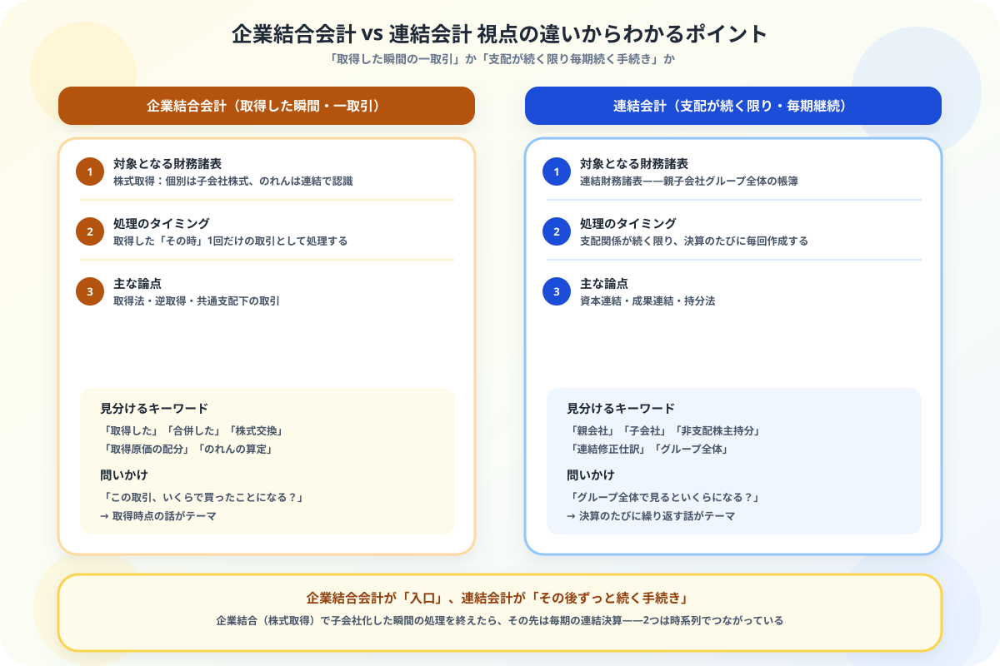

企業結合会計と連結会計の違いがわからない人へ
視点の違いからスッキリ整理する図解ガイド
- どちらも「他社と関わる会計処理」——だから見分けがつきにくい
- 本質の違いは視点とタイミング——企業結合会計は「取得した瞬間」、連結会計は「支配が続く限り毎期」
- 取得法・逆取得・共通支配下の取引は企業結合会計の中身——資本連結・成果連結・持分法は連結会計の中身
- 2つは対立する概念ではなく、時系列でつながっている——企業結合が入口、連結会計がその後ずっと続く手続き
こんにちは、大谷です！
簿記2級の連結会計をなんとか乗り越えて1級のテキストを開いたら、いきなり「企業結合会計」という新しい章が出てきて、「あれ、これって連結会計と何が違うんだ……？ また似たような話が増えるのか」と身構えた経験があります。どちらも「他社が関わる」話なので、最初は本当に区別がつきませんでした。
でも実は、境界線はとてもシンプルです。「取得した瞬間の話か、その後ずっと続く話か」——これだけです。今日はこの視点の違いを、一緒に整理していきましょう！
また、記事の末尾のほうにある【いいねボタン】をポチッと押してもらえると、めちゃくちゃ嬉しいです！
❓ 視点の違い——「取得した瞬間」か「支配が続く限り」か
企業結合会計と連結会計は、どちらも「他社と関わる会計処理」という意味では似ていますが、見ている時間軸がまったく異なります。この1点を押さえるだけで、他のすべての違いが理解できます。

📝 ① 企業結合会計とは——取得した瞬間の個別財務諸表上の処理
企業結合とは、ある企業（または事業）と他の企業（または事業）が、1つの報告単位に統合されることをいいます。吸収合併・株式取得による子会社化などがこれにあたります。
A社はB社の発行済株式の100%を現金1,000万円で取得し、子会社化した。B社の識別可能純資産の時価は800万円だった。
💰 ② 連結会計とは——支配が続く限り毎期作成するグループ全体の財務諸表
連結会計は、親会社が子会社を支配している間、決算のたびにグループ全体をまとめた連結財務諸表を作成する手続きです。簿記2級の連結会計で学んだ資本連結（親会社の投資と子会社の資本を相殺する）、簿記1級の成果連結（グループ内取引の未実現利益を消去する）は、いずれもこの毎期の手続きに含まれます。
🔍 ③ 主な論点の切り分け——どちらのグループに属するか
| グループ | 含まれる論点 | タイミング |
|---|---|---|
| 企業結合会計 | 取得法・逆取得・共通支配下の取引 | 取得した瞬間の1回のみ |
| 連結会計 | 資本連結・成果連結・持分法 | 支配が続く限り毎期継続 |
🧭 ④ 2つの関係——企業結合が入口、連結会計がその後の手続き
企業結合会計と連結会計は、対立する2つの選択肢ではありません。時系列でつながっている、一続きのストーリーです。
- ① A社がB社の株式を取得し、子会社化する（企業結合会計・取得法で処理、1回だけ）
- ② 決算日を迎えるたびに、A社とB社を合わせた連結財務諸表を作成する（連結会計・資本連結、毎期繰り返す）
- ③ A社・B社間で商品売買などの取引があれば、その未実現利益を消去する（連結会計・成果連結、毎期繰り返す）
①が企業結合会計、②③が連結会計です。企業結合会計を正しく処理できていないと、その後の連結会計もすべてズレてしまう——という意味で、企業結合会計は連結会計の土台にあたります。
📋 まとめ：企業結合会計 vs 連結会計 早見表
「取得した瞬間か、その後続くか」——この1点で企業結合会計と連結会計はもう混同しません
2つは競合する概念ではなく、時系列でつながった一続きのストーリーでした。この記事が「あ、そういうことか！」につながったら、僕の執筆のモチベーション維持のために、この下にある【いいねボタン】をポチッと押してもらえると、めちゃくちゃ嬉しいです！
Study Questで今日の学習時間を記録して、簿記1級合格への一歩を刻んでおきましょう。